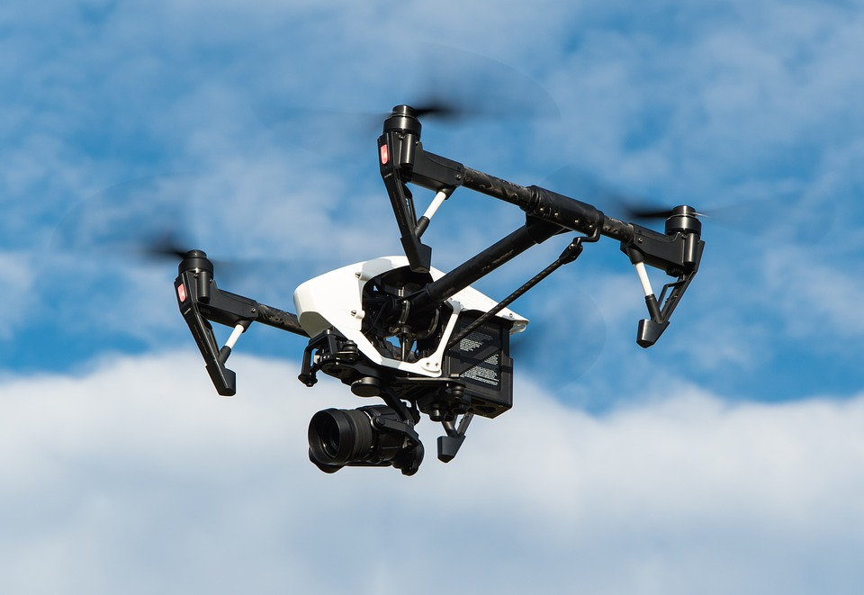

What are Drones?
Drones are unmanned aerial vehicles with GPS. There are many types of drones including photography, delivery, search and rescue, military and many more.
Photography Drones
Consumer Level
Photography drones are quadcopters that are used to take pictures and videos. These drones are becoming more and more common as the drones become easier to manage. There are many companies that manufacture consumer level drones including DJI, Yuneec, and many more. These companies produce quality drones that can be flown by the average person. Many photography companies use drones to film weddings and other special events. They use drones because of the special perspective that they capture. The technology that photography drones have is amazing. For example, the higher end consumer level drones can fly around 3 miles away while streaming video back to the pilot's phone. These drones also use gps to make the flight even easier because the drone will hold its position when you let off the thumb sticks on the controller.
Professional Level
Professional level drone often have many of the same features as consumer level drones. Professional level drones have gps, camera stabilization, return to home, etc just like many consumer level drones. The main difference between the two types of drones is the quality of camera. Professional level drones usually have a large payload capacity so the camera can be whatever the photographer wants and not just the stock camera resulting in superior photo quality. Finally, because of the ability to accomodate other cameras, professional drones are much larger with payload capacitys of up to 10 lbs! Professional level drones are much, much more expensive...some are up to $30,000 but not all of them are that expensive. The DJI Inspire 1 and Inspire 2 are between $2,000 and $3,000 but still offer some amazing features.
Emercency Service Drones
Recently drones have been being used in many more ways than ever thought possible. Drones are now used for firefighting, law enforcement, and search and rescue. The Inspire 1 is also cost effective as it is around $2,500 which isnt too bad for the functions of a quality drone like the Inspire.
Firefighting Drones
Drones can be used in firefighting so that the firefighters can see the hottest parts of the fire by using a thermal camera on the drone. This can be especially helpful in forest fires and larger scale fires. BUT REMEMBER, NEVER FLY DRONES OVER FOREST FIRES. This is dangerous because it can interfere with firefighting efforts. Only firefighters can fly over forest fires.
Law Enforement
Police officers can use drones to try to find suspects using thermal cameras because flying a drone doesn't have too much setup time and it is much faster than chasing a suspect on foot. Thermal Cameras are also good for finding the suspect if they run in the woods for example.
Search and Rescue
Drones are used for search and rescue efforts especially in wooded and/or mountainous areas. These drones are equiped with thermal cameras so that it is easier to spot the person even if they arent moving around.
Land Surveying
Recently, land surveying companies have started using drones for land surveying. Drones are very efficient for this job because they can be programeed to fly a set of waypoints and automatically take the pictures needed to create a 3D model of the area.
Military Drones
Military drones are used in situations where an unmanned aircraft is beneficial because of the riskiness of the mission. These drones can be equiped with cameras, missiles, sensors, and many other devices. Military drones are a safer alternative to traditional flights that risk the pilot's life. Military drones come in all shapes and sizes including unmanned planes with missiles, bird like drones that have wings and look like a normal bird, and unmanned helicopters for fire fighting, border control, reconaissance, etc.
Pictures

The Phantom 3 Advanced is a consumer level drone that has a 12 mp camera and 2.7k video recording. The phantom 3 series by DJI is a consumer type drone series for entry level drone photography.

The DJI Inspire 1 is a professional level drone that carries a 4k 360 degree camera with 16 mp pictures. The inspire has retractable landing gear to accomodate for the 360 camera. The Inspire 1 has many uses including but not limited to photography, land surveying, fire fighting, search and rescure, and many others.